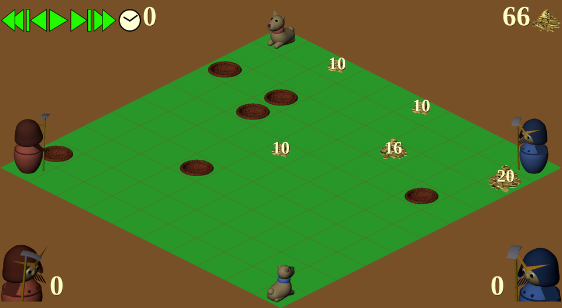

ここ掘れワンワンゲーム
ゲームの概要
2プレイヤーによるゼロサム不完全情報ゲーム.
フィールド内の埋蔵金の獲得量を競う.
ゲームフィールド
格子状のセルに区切られた正方形のフィールド.
各セルの状態は以下のいずれか.
- 平坦
-
侍や犬はそこに動ける.
平坦なセルの状態は以下のいずれか.
- 埋蔵金なし.
-
埋蔵金あり. その量は必ず偶数単位.
埋蔵金の存在が秘匿されているか否かによりふたつの場合がある.
-
埋蔵金の存在は秘匿されている.
犬はその位置の8近傍の秘匿埋蔵金の有無と量を知ることができるが,
侍は埋蔵金なしの状態と区別できない.
-
埋蔵金の存在は公開されている.
初期状態では存在せず,
犬エージェントが秘匿埋蔵金のあるセル上に達すると,
そのセルの埋蔵金は公開され,
パートナーの侍を含む,
全エージェントの知るところとなる.
- 穴
-
侍や犬はそこに動くことはできない.
初期状態で穴である場合の他, 侍による掘削により穴ができることもある.
侍は穴を埋めることもできるが, 犬にはできない.
各セルの初期状態は, 上記のうち公開埋蔵金あり以外のいずれかである.
ただしエージェントの初期位置に穴はなく, 埋蔵金もない.
ゲームエージェント
プレイヤーごとに侍と犬それぞれ 1 エージェントがあり,
それぞれプレイヤが提供するプログラムで制御する.
侍と犬のプログラムは独立プロセスで動作し,
ゲームシステムが介在する以外の相互通信, 情報共有はできない.
ゲーム開始時に 4 エージェントはフィールド上の異なる位置を占める.
ゲームの進行
ゲームはステップ単位で進行し,
すべての埋蔵金が掘り尽くされるか,
最大ステップ数が経過すると終了する.
各エージェントを制御するプロセスは,
ステップごとにゲームシステムからゲームの状態に関する情報を受領し,
エージェントの動きを決めて,
ゲームシステムに通知する.
エージェントに通知する情報
ステップ開始時に各エージェントに通知する情報
以下の情報は各ステップの開始時に全エージェントに与えられる.
- 最大ステップ数
- 当該のステップ番号 (ゼロから始める)
- フィールドの一辺の長さ.
- フィールド上の穴の位置
- 公開され未発掘の埋蔵金の位置と量
- 各エージェントの位置
- 各エージェントへの直前ステップにおける行動指示
- 各エージェントの直前ステップにおける行動
- 両軍それぞれが前ステップまでに発掘した埋蔵金の合計量
- 残る埋蔵金の総量
位置の情報は xy 座標で与える.
x, y それぞれは 0 からフィールドの一辺の長さ −1
の範囲の整数である.
後述するようにエージェントへの行動指示は互いに矛盾する場合がある.
その場合は行動指示と実際の行動は異なるものになる.
犬エージェントのみに通知する情報
犬エージェントはその位置の8近傍にある秘匿埋蔵金の位置と量とを感知できる.
この情報は各ステップの開始時に犬エージェントにのみ与えられる.
- それまでに感知したが未公開・未発掘の埋蔵金の位置と量
エージェントの行動
エージェントを制御するプロセスは,
各ステップにおいて担当するエージェントの動きを整数値ひとつで指示する.
侍の行動
各ステップでの侍への行動指示は以下のいずれかひとつである.
- 静止. 現在位置から動かない.
-
現在位置から 4 近傍セルのいずれかへの移動.
4 近傍セルとは, 現在位置の座標を (x, y) とすると,
(x−1, y),
(x+1, y),
(x, y−1),
(x, y+1)
の座標を持つ 4 セルのことである.
ただし, 以下の場合は現在位置から動かない.
- 移動先がフィールド外あるいは穴である場合.
- 移動先に侍または犬がいる場合.
- 他の侍や犬が同じ移動先を指示した場合.
-
現在位置の 4 近傍セルの掘削.
掘削したセルに埋蔵金がある場合は, それを入手できる.
埋蔵金があってもなくても, 掘削したセルは穴になる.
侍の位置は変化しない.
ただし, 以下の場合は掘削できない.
- 対象セルがフィールド外あるいは穴である場合.
- 対象セルに侍または犬がいる場合.
-
同一ステップで他の侍または犬が対象セルに移動する場合.
ただし対象セルへの移動が指示されても,
複数の侍や犬の同じセルへの指示により実際には移動できない場合は,
掘削できる.
両軍の侍が同一セルの掘削を指示した場合も掘削は成功する.
そこに埋蔵金があれば半分ずつ分ける.
-
現在位置の 4 近傍セルの穴埋め.
両軍の侍が同一セルの穴埋めを指示した場合も穴埋めは成功する.
犬の行動
各ステップでの犬への行動指示は以下のいずれかひとつである.
- 静止. 現在位置から動かない.
-
現在位置から 8 近傍セルへの移動.
8近傍セルとは, 現在位置の座標を (x, y) とすると,
(x±1, y±1),
の座標を持つ 8 セルのことである.
ただし, 以下の場合は現在位置から動かない.
- 移動先がフィールド外あるいは穴である場合.
- 移動先に侍または犬がいる場合.
- 他の侍や犬が同じ移動先を指示した場合.
犬エージェントが秘匿埋蔵金のあるセル上に移動すると,
ステップ終了時にその埋蔵金の位置と量は全エージェントに公開される.
勝敗
同じ埋蔵金位置で初期位置を入れ替えて実施する 2 ゲームを 1 試合とし,
ゲーム終了時までに獲得した埋蔵金量の合計が多い側の勝ちとする.
埋蔵金量の合計が同じなら引き分けである.
なお 2 ゲーム目でもゲームエージェントを制御するプログラムには
1 ゲーム目の結果を通知しないので,
両ゲームはまったく独立に行われることになる.
ありそうな戦術・戦略
犬が埋蔵金の番を
埋蔵金のあるセルに犬が居座れば, 敵の侍はそこを掘削できない.
味方の侍の到着を待ってから犬が移動すれば, 次ステップで掘り出せる.
味方が近くにいる場合だけ埋蔵金を公開
秘匿埋蔵金をみつけた犬は,
味方の侍が相手の侍より埋蔵金セルの近くにいる場合だけ,
そこに移動して公開する.
そうでなければそこには移動せず,
そのセルの周囲にとどまり公開するチャンスを伺う.
侍は犬の近くに
侍は犬が埋蔵金を見つけたときにすぐ掘り出せるように,
なるべく犬に近づくように行動する.
埋蔵金を公開せずに位置を通知
秘匿埋蔵金をみつけた犬は, 味方の侍が敵の侍より遠い場合は,
埋蔵金セルに移動せずに,
あらかじめ取り決めた (通常はしない) 数ステップの動きを見せることで,
味方の侍に埋蔵金セルの位置を知らせることが考えられる.
敵の動きを制約
犬が敵の侍が動きたいセルに動く, あるいは留まることにより,
敵の侍の動きを邪魔することができる.
敵の犬を封じ込める
侍が穴を掘ることによって敵の動きを邪魔することもできる.
ことに犬は自分で穴埋めできないので,
犬の周囲 (コーナーなら 3 セル) に穴を掘れば,
侍が穴を埋めて救出するまで動けなくなる.